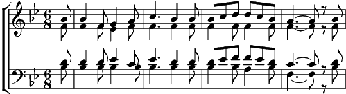

1. Mein Heiland, Herr und Meister! Dein Mund, so segensreich,
sprach einst das Wort des Heiles: "Der Friede sei mit euch!"
O Lamm, das opfernd tilgte der Menschheit schwere Schuld,
send uns auch deinen Frieden durch deine Gnad und Huld.
2. In dieses Friedens Palmen erstirbt der Erdenschmerz,
sie wehen Heil und Labung ins sturmbewegte Herz;
und auch der Erden Freude durch ihn geheiligt blüht
entzückender und reiner dem seligen Gemüt.
3. Herr, unsre Lieben alle, die nun bereits von hier
ins Land des Friedens gingen, nimm sie, nimm sie zu dir!
Lass einst sie dort uns finden! O seliger Verein,
wenn wir des Himmelsfrieden zusammen uns erfreu'n!